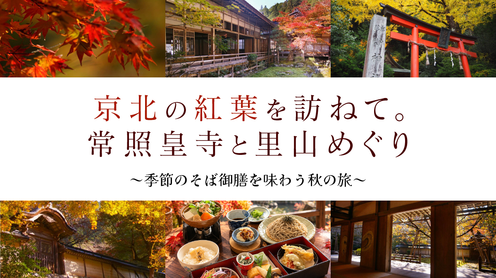
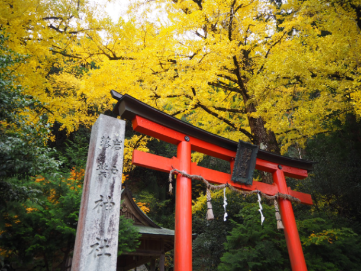
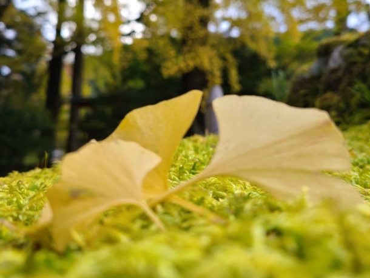
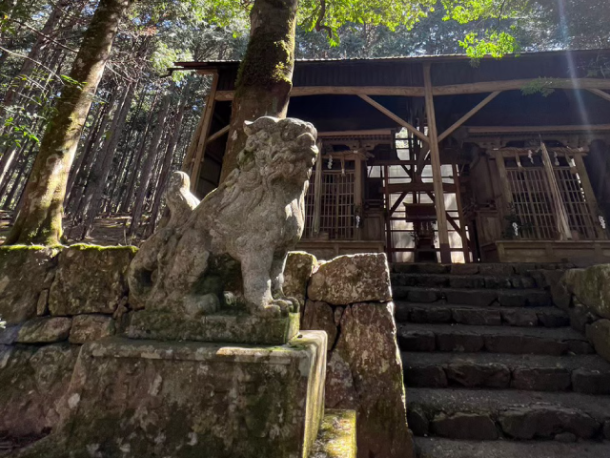
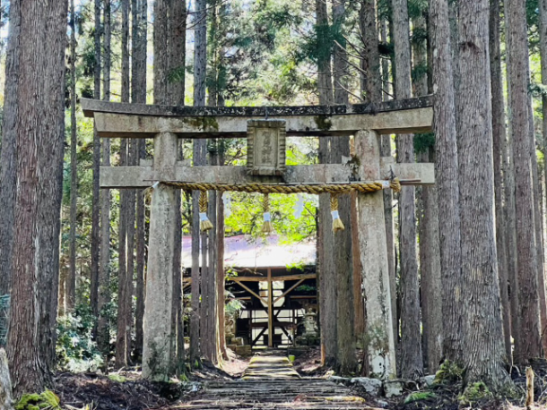
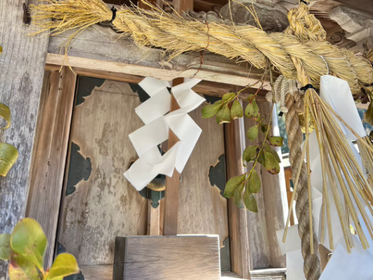
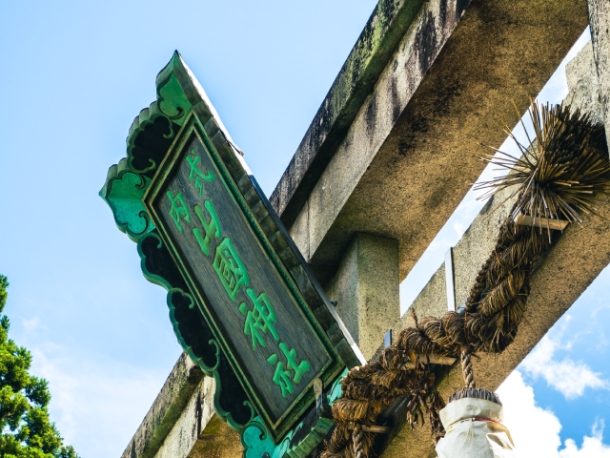

最新の情報は 公式サイトのツアーページ をご覧ください。
京北の紅葉を訪ねて。常照皇寺と里山めぐり～季節のそば御膳を味わう秋の旅～

※大人・子ども同額
| 現在のお申込み状況(最少催行人数6名) |
※1名様からご予約いただけますが6名様以上で運行します。
※最新のお申込み状況はお問い合わせください
少しだけ足を延ばして、山々が色づく京北へ。
紅葉に包まれる「岩戸落葉神社」や、静かな里山に佇む「賀茂神社」「山國神社」を訪ねながら、秋の京北をゆったりとめぐります。
お昼は、京北の蕎麦処「京蕪庵」へ。
このツアーのためにご用意いただいた、ＭＫトラベルオリジナルの「季節のそば御膳」をお楽しみいただきます。
季節の味わいを楽しめる昼食も、旅の楽しみのひとつです。
午後は、皇室ゆかりの古刹「常照皇寺」へ。
色づく木々に包まれた静かな境内を歩きながら、いつもの京都とは少し違う、穏やかな秋の時間をお過ごしください。
さらに、明智光秀ゆかりの寺として知られる「慈眼寺」にも立ち寄り、最後は「道の駅ウッディー京北」でお買い物。
有名な紅葉名所を駆け足でめぐるのではなく、寺社や里山の風景、京北ならではの食を楽しみながら、ゆったりと秋の一日を過ごす旅をお届けします。
| 🌟おすすめポイント |
| 🍁京都の奥、京北で楽しむ静かな秋 山々が色づく京北へ。岩戸落葉神社や賀茂神社、山國神社など、趣の異なる秋の風景をめぐります。 |
| 👞皇室ゆかりの古刹「常照皇寺」へ 京北を代表する紅葉スポットのひとつ、常照皇寺をゆっくり散策。 色づく境内で、静かな秋のひとときをお楽しみください。 |
| 🥢この旅だけの特別な「季節のそば御膳」 昼食は京北の蕎麦処「京蕪庵」へ。 MKトラベルオリジナルの季節のそば御膳をご用意しました。 |
| ⚔明智光秀ゆかりの「慈眼寺」にも立ち寄り 紅葉だけではなく、京北の歴史にも触れるひとときを。 静かな山里に佇む慈眼寺を訪ねます。 |
| 🚙少人数のジャンボタクシーでゆったり 移動中も景色を眺めながら、ゆったりと秋の一日をお楽しみいただけます。 |
行程
| 時間 | 場所 |
| 9:00 | 京都駅八条口MKタクシーのりば |
| 9:50 | 岩戸落葉神社 |
| 10:20 | 賀茂神社 |
| 11:00 | 山國神社 |
| 11:30 | 京北の蕎麦処「京蕪庵」 |
| 12:40 | 常照皇寺 |
| 13:55 | 慈眼寺 |
| 14:20 | 道の駅ウッディ京北 |
| 15:40頃 | 京都駅 |
※渋滞等で、予定通りの滞在時間をお取りすることができない場合がございます。予めご了承ください。
※紅葉の見頃は、その年の気候や天候により前後する場合がございます。あらかじめご了承ください。
※行程内には、階段や段差のある場所がございます。歩きやすい服装・靴でのご参加をおすすめします。
岩戸落葉神社


賀茂神社


山國神社


常照皇寺


京北の蕎麦処「京蕪庵」

MKトラベルオリジナルの「季節のそば御膳」
【MKトラベルLINE公式アカウント】
MKトラベルの新規ツアー情報をLINEでお届けいたします

【各SNSでも京都の情報やツアー情報をお届けしています】


旅行条件
| ツアー番号 | T322MK |
| 出発地 | 京都市内 |
| 添乗員／ガイド | 添乗員：なし（乗務員がその業務を代行いたします） |
| 食事 | あり |
| 最少催行人数 | 6名 |
お申込みについてのご注意
※最少催行人数は6名様です。最少催行人員に満たない場合は、旅行の実施を取りやめることがあります。出発の7日前にその旨をご連絡し、お客様から当社がお預かりしている旅行費用の全額をお返しいたします。
※旅行条件・旅行代金は、2026年9月1日現在を基準としています。
※行程および帰着時間は交通事情などにより変更になる場合があります。
※お申込みの前に弊社の募集型企画旅行規約をご確認ください。
よくある質問
Q.1名ですが、申し込みできますか？
A.はい。お一人参加の方もたくさんいらっしゃいますので、お気軽にお申し込みください。
Q.参加したかったけど、日程が合いません／終了していました
A.貸切で再現できる場合もございますのでご相談ください。お問合せフォームはこちら
Q. 雨天でも催行しますか？
A.はい。雨が見込まれる日は、安全のため滑りにくい靴でご参加ください。
＜お問合せフォームはこちら▶＞
＜MKトラベルTOPはこちら▶＞
＜おすすめツアー一覧はこちら▶＞
【WEBシステムよりご予約の場合】
・クレジットカード決済
・コンビニ決済
お支払方法詳細はこちら
お客様のご都合でご予約をキャンセルされる場合は、すみやかに下記お問合せ先までご連絡ください。
キャンセル料
11日目に当たる日以前
無料
10日目に当たる日以降
20%
7日目に当たる日以降
30%
旅行開始日の前日
40%
旅行開始日の当日
50%
旅行開始後又は無連絡
100%